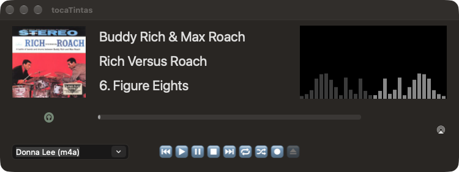

Janela principal

À esquerda fica a capa. Ao centro estão o artista, o álbum e a faixa, em etiquetas que deslizam quando o texto não cabe, e à direita o histograma. Por baixo de tudo fica a barra de progresso.
etiquetas deslizantes
Um texto que não cabe aparece cortado a meio com «…» (Bach: Goldberg…BWV 988), como em qualquer etiqueta do macOS. De tempos a tempos, desliza da direita para a esquerda até se ver todo, seguido de uma cópia que traz o princípio de volta ao lugar. No fim, volta à forma cortada. As bordas esbatem-se, para que o texto não entre nem saia de repente.
As três etiquetas revezam-se, e só uma desliza de cada vez, pela ordem artista, álbum e faixa. As que cabem são saltadas. Quando começa uma faixa nova, tudo fica parado 2 s antes da primeira passagem, e entre duas passagens há 8 s. O texto anda a 50 pt/s, cerca de quatro caracteres e meio por segundo. Uma passagem só começa se a faixa durar até ela acabar, para que um título não fique a meio caminho quando a faixa seguinte o substitui.
O movimento é feito pelo Core Animation, no servidor de composição. O texto desenha-se uma vez por passagem, e a aplicação só acorda duas vezes, no princípio e no fim. Redesenhar a 60 Hz custava cerca de 4 % do processador; assim, quase não custa nada.
escolher a música
O menu em baixo, à esquerda, lista as faixas da pasta corrente, cada uma com o formato entre parênteses: (flac), (wv) e, nos .m4a, (aac) ou (alac), conforme o que a fonoteca diz que lá está. Pode escrever-se o princípio do nome para o completar. Os acentos contam como se escrevem no teclado, e um título que comece por um número («12 Études») também se encontra por esse número.
⏮ ▶ ⏸ ⏹ ⏭
Anterior, tocar, pausa, parar e seguinte. Quando a janela mostra o que a aplicação Música está a tocar, os botões comandam o Música (ver a seguir).
repetir, baralhar
O botão de repetir volta a tocar a faixa em curso quando ela chega ao fim, sem parar, até ser desligado. Cada repetição conta como uma audição nova. O botão de baralhar baralha a lista em vigor uma vez, e a ordem mantém-se até ser desligado. Nenhuma faixa se repete antes de todas terem tocado.
⏺
Grava para WAV (ver GRAVAÇÃO).
⏏
Ejecta o CD. Só fica activo quando há um disco no leitor.
auscultadores (à esquerda, por baixo da capa)
Liga e desliga o tratamento dos auscultadores, o crossfeed e a equalização, sem mexer no volume, para se poder comparar o som com e sem ele. Azul quer dizer ligado e branco desligado. Sem auscultadores ligados, o botão apita e nada muda.
AirPlay (à direita, por baixo do histograma)
Escolhe o receptor. Com ⌘-clique, a sessão com o receptor corrente é reaberta, o que resolve os casos em que ele adormeceu ou a rede falhou por instantes.
O que a aplicação Música toca
Quando o tocaTintas está parado, nem a tocar nem em pausa, a janela mostra o que a aplicação Música estiver a tocar: a capa, o artista, o álbum, o título e a barra de progresso. O título leva ♫ à frente, para se saber de onde vem. Isto serve sobretudo para gravar, porque se vê ali o que está a entrar no ficheiro. Logo que o tocaTintas toque alguma coisa sua, a janela volta a ser dele.
O Música avisa cada faixa nova, cada pausa e cada paragem. Entre avisos, a barra avança sozinha e é acertada pela posição verdadeira a cada cinco segundos. Se o Música não responder, a janela mantém o que mostra e volta a perguntar daí a cinco segundos. Só desiste à terceira falha seguida, até ao aviso seguinte do Música.
os botões
Com o Música na janela, os botões ⏮ ▶ ⏸ ⏹ ⏭ comandam o Música. O ⏸ alterna entre pausa e reprodução, como no tocaTintas. O ⏮ vai sempre à faixa anterior, também como no tocaTintas, e não ao princípio da faixa, como o botão do próprio Música. O ⏹ pára o Música e devolve a janela ao tocaTintas. Para tocar uma faixa do tocaTintas com o Música à vista, escolhe-se a faixa na lista ou pára-se primeiro o Música. Se o Música não responder, nada acontece: tocar de repente outra coisa seria mais estranho do que um clique sem efeito. Os comandos AppleScript continuam a ser só do tocaTintas.
a contagem
Por baixo, à direita, aparece quantas vezes a faixa já tocou, incluindo «tocou 0 vezes», que é a forma de saber que é a primeira. Para as faixas da biblioteca do Música, a contagem é a do próprio Música. Para as faixas do catálogo do Apple Music que não estão na biblioteca, e para as das estações, o Música não guarda contagem nenhuma. Nesse caso, a contagem é a da base da fonoteca, que inclui as audições da mesma música nos ficheiros e nos CDs (ver AUDIÇÕES DO MÚSICA).
a capa
Para as faixas da biblioteca, a capa é a que o Música dá. Para as do catálogo e das estações, o Música entrega pelo AppleScript a capa da faixa anterior, ou nenhuma, embora o seu minileitor mostre a certa. Por isso, o tocaTintas vai buscar a capa dessas faixas ao catálogo da Apple, pela pesquisa pública do iTunes, na loja do país do Mac, a 600 px. Procura primeiro o artista e, entre os álbuns dele, o que tem esse nome. Isto encontra os discos de nomes comuns, que uma pesquisa por texto esconde debaixo de outros. Se não o encontrar assim, pesquisa o álbum pelo artista e pelo nome e, por fim, a faixa pelo artista e pelo título, e dela tira o álbum. O nome do álbum compara-se sem contar maiúsculas e acentos e, se for preciso, sem sufixos de edição como «(Deluxe Version)», «- EP» ou «- Single». Entre os álbuns que servem, o do mesmo artista tem prioridade, porque há, por exemplo, mais de um «Bloom». Sem correspondência fica a imagem genérica, porque a capa de outro disco engana mais do que nenhuma. A capa chega uns instantes depois do resto.